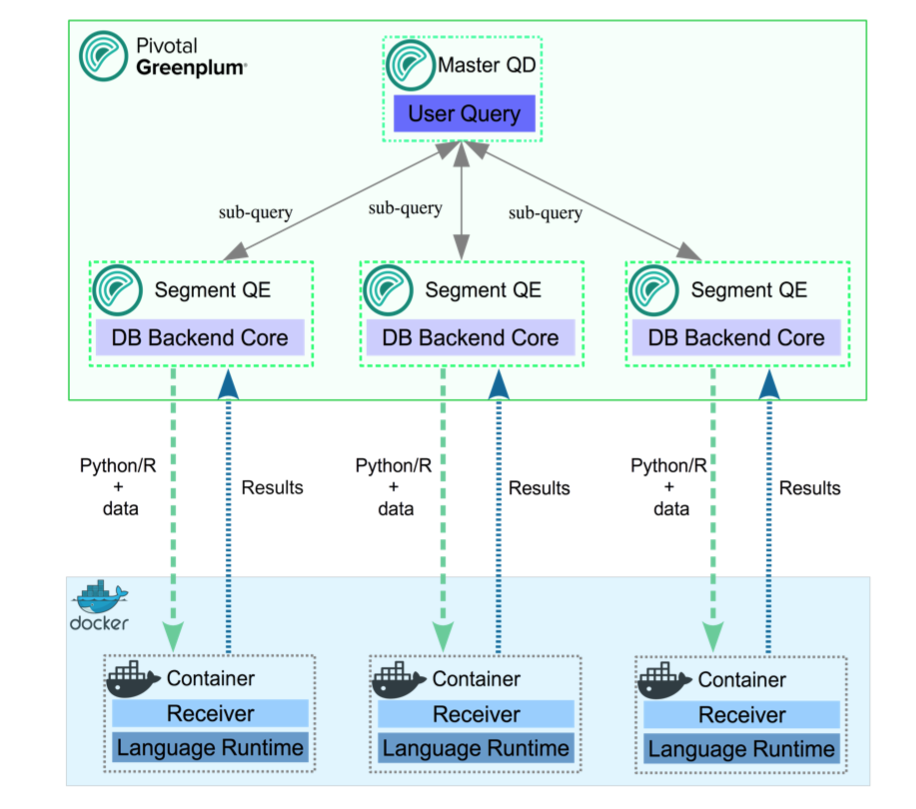

PL/Container Language
PL/Container enables users to run SynxDB procedural language functions inside a Docker container, to avoid security risks associated with running Python or R code on SynxDB segment hosts. For Python, PL/Container also enables you to use the Compute Unified Device Architecture (CUDA) API with NVIDIA GPU hardware in your procedural language functions. This topic covers information about the architecture, installation, and setup of PL/Container:
- About the PL/Container Language Extension
- Install PL/Container
- Upgrade PL/Container
- Uninstall PL/Container
- Docker References
For detailed information about using PL/Container, refer to:
The PL/Container language extension is available as an open source module. For information about the module, see the README file in the GitHub repository at https://github.com/greenplum-db/plcontainer-archive.
About the PL/Container Language Extension
The SynxDB PL/Container language extension allows you to create and run PL/Python or PL/R user-defined functions (UDFs) securely, inside a Docker container. Docker provides the ability to package and run an application in a loosely isolated environment called a container. For information about Docker, see the Docker web site.
Running UDFs inside the Docker container ensures that:
- The function execution process takes place in a separate environment and allows decoupling of the data processing. SQL operators such as “scan,” “filter,” and “project” are run at the query executor (QE) side, and advanced data analysis is run at the container side.
- User code cannot access the OS or the file system of the local host.
- User code cannot introduce any security risks.
- Functions cannot connect back to the SynxDB if the container is started with limited or no network access.
PL/Container Architecture

Example of the process flow:
Consider a query that selects table data using all available segments, and transforms the data using a PL/Container function. On the first call to a function in a segment container, the query executor on the master host starts the container on that segment host. It then contacts the running container to obtain the results. The container might respond with a Service Provider Interface (SPI) - a SQL query run by the container to get some data back from the database - returning the result to the query executor.
A container running in standby mode waits on the socket and does not consume any CPU resources. PL/Container memory consumption depends on the amount of data cached in global dictionaries.
The container connection is closed by closing the SynxDB session that started the container, and the container shuts down.
About PL/Container 3 Beta
Note PL/Container 3 Beta is deprecated and will be removed in a future SynxDB release.
SynxDB 2 includes PL/Container version 3 Beta, which:
- Reduces the number of processes created by PL/Container, in order to save system resources.
- Supports more containers running concurrently.
- Includes improved log messages to help diagnose problems.
- Supports the
DOcommand (anonymous code block).
PL/Container 3 is currently a Beta feature, and provides only a Beta R Docker image for running functions; Python images are not yet available. Save and uninstall any existing PL/Container software before you install PL/Container 3 Beta.
Install PL/Container
This topic includes how to:
- Install Docker
- Install PL/Container
- Install the PL/Container Docker images
- Test the PL/Container installation
The following sections describe these tasks in detail.
Prerequisites
-
For PL/Container 2.1.x use SynxDB 2 on CentOS 7.x (or later), RHEL 7.x (or later), or Ubuntu 18.04.
Note PL/Container 2.1.x supports Docker images with Python 3 installed.
-
For PL/Container 3 Beta use SynxDB 2 on CentOS 7.x (or later), RHEL 7.x (or later), or Ubuntu 18.04.
-
The minimum Linux OS kernel version supported is 3.10. To verify your kernel release use:
$ uname -r -
The minimum supported Docker versions on all hosts is Docker 19.03.
Install Docker
To use PL/Container you need to install Docker on all SynxDB host systems. These instructions show how to set up the Docker service on CentOS 7 but RHEL 7 is a similar process.
These steps install the docker package and start the Docker service as a user with sudo privileges.
-
Ensure the user has sudo privileges or is root.
-
Install the dependencies required for Docker:
sudo yum install -y yum-utils device-mapper-persistent-data lvm2 -
Add the Docker repo:
sudo yum-config-manager --add-repo https://download.docker.com/linux/centos/docker-ce.repo -
Update yum cache:
sudo yum makecache fast -
Install Docker:
sudo yum -y install docker-ce -
Start Docker daemon:
sudo systemctl start docker -
On each SynxDB host, the
gpadminuser should be part of the docker group for the user to be able to manage Docker images and containers. Assign the SynxDB administratorgpadminto the groupdocker:sudo usermod -aG docker gpadmin -
Exit the session and login again to update the privileges.
-
Configure Docker to start when the host system starts:
sudo systemctl enable docker.servicesudo systemctl start docker.service -
Run a Docker command to test the Docker installation. This command lists the currently running Docker containers.
docker ps -
After you install Docker on all SynxDB hosts, restart the SynxDB system to give SynxDB access to Docker.
gpstop -ra
For a list of observations while using Docker and PL/Container, see the Notes section. For a list of Docker reference documentation, see Docker References.
Install PL/Container
Install the PL/Container language extension using the gppkg utility.
-
Download the “PL/Container for RHEL 7” package that applies to your SynxDB version. PL/Container is listed under SynxDB Procedural Languages.
-
As
gpadmin, copy the PL/Container language extension package to the master host. -
Run the package installation command:
gppkg -i plcontainer-2.1.1-rhel7-x86_64.gppkg -
Source the file
$GPHOME/synxdb_path.sh:source $GPHOME/synxdb_path.sh -
Make sure SynxDB is up and running:
gpstate -sIf it’s not, start it:
gpstart -a -
For PL/Container version 3 Beta only, add the
plc_coordinatorshared library to the SynxDBshared_preload_librariesserver configuration parameter. Be sure to retain any previous setting of the parameter. For example:gpconfig -s shared_preload_libraries Values on all segments are consistent GUC : shared_preload_libraries Coordinator value: diskquota Segment value: diskquota gpconfig -c shared_preload_libraries -v 'diskquota,plc_coordinator' -
Restart SynxDB:
gpstop -ra -
Login into one of the available databases, for example:
psql postgres -
Register the PL/Container extension, which installs the
plcontainerutility:CREATE EXTENSION plcontainer;You’ll need to register the utility separately on each database that might need the PL/Container functionality.
Install PL/Container Docker Images
Install the Docker images that PL/Container will use to create language-specific containers to run the UDFs. Before installing, review this compatiblity matrix:
| plcontainer version | R image version | python2 image version | python3 image version |
|---|---|---|---|
| 2.3.2 | 2.1.3 | 2.1.3 | 2.3.2 |
| 2.4.0 | 2.1.3 | 2.1.3 | 2.4.0 |
Note: The PL/Container open source module contains dockerfiles to build Docker images that can be used with PL/Container. You can build a Docker image to run PL/Python UDFs and a Docker image to run PL/R UDFs. See the dockerfiles in the GitHub repository at https://github.com/greenplum-db/plcontainer-archive.
-
Download the files that contain the Docker images. For example, click on “PL/Container Image for Python 2.2.0” which downloads plcontainer-python3-image-2.2.0-gp6.tar.gz with Python 3.9 and the Python 3.9 Data Science Module Package.
If you require different images from the ones provided by SynxDB, you can create custom Docker images, install the image and add the image to the PL/ Container configuration.
-
If you are using PL/Container 3 Beta, note that this Beta version is compatible only with the associated
plcontainer-r-image-3.0.0-beta-gp6.tar.gzimage. -
Use the
plcontainer image-addcommand to install an image on all SynxDB hosts. Provide the-foption to specify the file system location of a downloaded image file. For example:# Install a Python 2 based Docker image plcontainer image-add -f /home/gpadmin/plcontainer-python-image-2.2.0-gp6.tar.gz # Install a Python 3 based Docker image plcontainer image-add -f /home/gpadmin/plcontainer-python3-image-2.2.0-gp6.tar.gz # Install an R based Docker image plcontainer image-add -f /home/gpadmin/plcontainer-r-image-2.1.3-gp6.tar.gz # Install the Beta R image for use with PL/Container 3.0.0 Beta plcontainer image-add -f /home/gpadmin/plcontainer-r-image-3.0.0-beta-gp6.tar.gzThe utility displays progress information, similar to:
20200127:21:54:43:004607 plcontainer:mdw:gpadmin-[INFO]:-Checking whether docker is installed on all hosts... 20200127:21:54:43:004607 plcontainer:mdw:gpadmin-[INFO]:-Distributing image file /home/gpadmin/plcontainer-python-images-1.5.0.tar to all hosts... 20200127:21:54:55:004607 plcontainer:mdw:gpadmin-[INFO]:-Loading image on all hosts... 20200127:21:55:37:004607 plcontainer:mdw:gpadmin-[INFO]:-Removing temporary image files on all hosts...By default, the
image-addcommand copies the image to each SynxDB segment and standby master host, and installs the image. When you specify the[-ulc | --use_local_copy]option,plcontainerinstalls the image only on the host on which you run the command. Use this option when the PL/Container image already resides on disk on a host.For more information on
image-addoptions, visit the plcontainer reference page. -
To display the installed Docker images on the local host use:
$ plcontainer image-listREPOSITORY TAG IMAGE ID CREATED pivotaldata/plcontainer_r_shared devel 7427f920669d 10 months ago pivotaldata/plcontainer_python_shared devel e36827eba53e 10 months ago pivotaldata/plcontainer_python3_shared devel y32827ebe55b 5 months ago -
Add the image information to the PL/Container configuration file using
plcontainer runtime-add, to allow PL/Container to associate containers with specified Docker images.Use the
-roption to specify your own user defined runtime ID name, use the-ioption to specify the Docker image, and the-loption to specify the Docker image language. When there are multiple versions of the same docker image, for example 1.0.0 or 1.2.0, specify the TAG version using “:” after the image name.# Add a Python 2 based runtime plcontainer runtime-add -r plc_python_shared -i pivotaldata/plcontainer_python_shared:devel -l python # Add a Python 3 based runtime that is supported with PL/Container 2.2.x plcontainer runtime-add -r plc_python3_shared -i pivotaldata/plcontainer_python3_shared:devel -l python3 # Add an R based runtime plcontainer runtime-add -r plc_r_shared -i pivotaldata/plcontainer_r_shared:devel -l rThe utility displays progress information as it updates the PL/Container configuration file on the SynxDB instances.
For details on other
runtime-addoptions, see the plcontainer reference page. -
Optional: Use SynxDB resource groups to manage and limit the total CPU and memory resources of containers in PL/Container runtimes. In this example, the Python runtime will be used with a preconfigured resource group 16391:
plcontainer runtime-add -r plc_python_shared -i pivotaldata/plcontainer_python_shared:devel -l python -s resource_group_id=16391For more information about enabling, configuring, and using SynxDB resource groups with PL/Container, see PL/Container Resource Management.
You can now create a simple function to test your PL/Container installation.
Test the PL/Container Installation
List the names of the runtimes your created and added to the PL/Container XML file:
plcontainer runtime-show
which will show a list of all installed runtimes:
PL/Container Runtime Configuration:
---------------------------------------------------------
Runtime ID: plc_python_shared
Linked Docker Image: pivotaldata/plcontainer_python_shared:devel
Runtime Setting(s):
Shared Directory:
---- Shared Directory From HOST '/usr/local/synxdb/./bin/plcontainer_clients' to Container '/clientdir', access mode is 'ro'
---------------------------------------------------------
You can also view the PL/Container configuration information with the plcontainer runtime-show -r <runtime_id> command. You can view the PL/Container configuration XML file with the plcontainer runtime-edit command.
Use the psql utility and select an existing database:
psql postgres;
If the PL/Container extension is not registered with the selected database, first enable it using:
postgres=# CREATE EXTENSION plcontainer;
Create a simple function to test your installation; in the example, the function will use the runtime plc_python_shared:
postgres=# CREATE FUNCTION dummyPython() RETURNS text AS $$
# container: plc_python_shared
return 'hello from Python'
$$ LANGUAGE plcontainer;
And test the function using:
postgres=# SELECT dummyPython();
dummypython
-------------------
hello from Python
(1 row)
Similarly, to test the R runtime:
postgres=# CREATE FUNCTION dummyR() RETURNS text AS $$
# container: plc_r_shared
return ('hello from R')
$$ LANGUAGE plcontainer;
CREATE FUNCTION
postgres=# select dummyR();
dummyr
--------------
hello from R
(1 row)
For further details and examples about using PL/Container functions, see PL/Container Functions.
Upgrade PL/Container
To upgrade PL/Container, you save the current configuration, upgrade PL/Container, and then restore the configuration after upgrade. There is no need to update the Docker images when you upgrade PL/Container.
Note Before you perform this upgrade procedure, ensure that you have migrated your PL/Container package from your previous SynxDB installation to your new SynxDB installation. Refer to the gppkg command for package installation and migration information.
Note You cannot upgrade to PL/Container 3 Beta. To install PL/Container 3 Beta, first save and then uninstall your existing PL/Container software. Then follow the instructions in Install PL/Container.
To upgrade, perform the following procedure:
-
Save the PL/Container configuration. For example, to save the configuration to a file named
plcontainer202-backup.xmlin the local directory:$ plcontainer runtime-backup -f plcontainer202-backup.xml -
Use the SynxDB
gppkgutility with the-uoption to update the PL/Container language extension. For example, the following command updates the PL/Container language extension to version 2.2.0 on a Linux system:$ gppkg -u plcontainer-2.2.0-gp6-rhel7_x86_64.gppkg -
Source the SynxDB environment file
$GPHOME/synxdb_path.sh.$ source $GPHOME/synxdb_path.sh -
Restore the PL/Container configuration that you saved in a previous step:
$ plcontainer runtime-restore -f plcontainer202-backup.xml -
Restart SynxDB.
$ gpstop -ra -
You do not need to re-register the PL/Container extension in the databases in which you previously created the extension but ensure that you register the PL/Container extension in each new database that will run PL/Container UDFs. For example, the following command registers PL/Container in a database named
mytest:$ psql -d mytest -c 'CREATE EXTENSION plcontainer;'The command also creates PL/Container-specific functions and views.
Uninstall PL/Container
To uninstall PL/Container, remove Docker containers and images, and then remove the PL/Container support from SynxDB.
When you remove support for PL/Container, the plcontainer user-defined functions that you created in the database will no longer work.
Uninstall Docker Containers and Images
On the SynxDB hosts, uninstall the Docker containers and images that are no longer required.
The plcontainer image-list command lists the Docker images that are installed on the local SynxDB host.
The plcontainer image-delete command deletes a specified Docker image from all SynxDB hosts.
Some Docker containers might exist on a host if the containers were not managed by PL/Container. You might need to remove the containers with Docker commands. These docker commands manage Docker containers and images on a local host.
- The command
docker ps -alists all containers on a host. The commanddocker stopstops a container. - The command
docker imageslists the images on a host. - The command
docker rmiremoves images. - The command
docker rmremoves containers.
Remove PL/Container Support for a Database
To remove support for PL/Container, drop the extension from the database. Use the psql utility with DROP EXTENSION command (using -c) to remove PL/Container from mytest database.
psql -d mytest -c 'DROP EXTENSION plcontainer CASCADE;'
The CASCADE keyword drops PL/Container-specific functions and views.
Remove PL/Container 3 Beta Shared Library
This step is required only if you have installed PL/Container 3 Beta. Before you remove the extension from your system with gppkg, remove the shared library configuration for the plc_coordinator process:
-
Examine the
shared_preload_librariesserver configuration parameter setting.$ gpconfig -s shared_preload_libraries-
If
plc_coordinatoris the only library listed, remove the configuration parameter setting:$ gpconfig -r shared_preload_librariesRemoving a server configuration parameter comments out the setting in the postgresql.conf file.
-
If there are multiple libraries listed, remove
plc_coordinatorfrom the list and re-set the configuration parameter. For example, ifshared_preload_librariesis set to'diskquota,plc_coordinator':$ gpconfig -c shared_preload_libraries -v 'diskquota'
-
-
Restart the SynxDB cluster:
$ gpstop -ra
Uninstall the PL/Container Language Extension
If no databases have plcontainer as a registered language, uninstall the SynxDB PL/Container language extension with the gppkg utility.
-
Use the SynxDB
gppkgutility with the-roption to uninstall the PL/Container language extension. This example uninstalls the PL/Container language extension on a Linux system:$ gppkg -r plcontainer-2.1.1You can run the
gppkgutility with the options-q --allto list the installed extensions and their versions. -
Reload
synxdb_path.sh.$ source $GPHOME/synxdb_path.sh -
Restart the database.
$ gpstop -ra
Notes
Docker Notes
-
If a PL/Container Docker container exceeds the maximum allowed memory, it is terminated and an out of memory warning is displayed.
-
PL/Container does not limit the Docker base device size, the size of the Docker container. In some cases, the Docker daemon controls the base device size. For example, if the Docker storage driver is devicemapper, the Docker daemon
--storage-optoption flagdm.basesizecontrols the base device size. The default base device size for devicemapper is 10GB. The Docker commanddocker infodisplays Docker system information including the storage driver. The base device size is displayed in Docker 1.12 and later. For information about Docker storage drivers, see the Docker information Daemon storage-driver.When setting the Docker base device size, the size must be set on all SynxDB hosts.
-
Known issue:
Occasionally, when PL/Container is running in a high concurrency environment, the Docker daemon hangs with log entries that indicate a memory shortage. This can happen even when the system seems to have adequate free memory.
The issue seems to be triggered by the aggressive virtual memory requirement of the Go language (golang) runtime that is used by PL/Container, and the SynxDB Linux server kernel parameter setting for overcommit_memory. The parameter is set to 2 which does not allow memory overcommit.
A workaround that might help is to increase the amount of swap space and increase the Linux server kernel parameter overcommit_ratio. If the issue still occurs after the changes, there might be memory shortage. You should check free memory on the system and add more RAM if needed. You can also decrease the cluster load.
Docker References
Docker home page https://www.docker.com/
Docker command line interface https://docs.docker.com/engine/reference/commandline/cli/
Dockerfile reference https://docs.docker.com/engine/reference/builder/
For CentOS, see Docker site installation instructions for CentOS.
For a list of Docker commands, see the Docker engine Run Reference.
Installing Docker on Linux systems https://docs.docker.com/engine/installation/linux/centos/
Control and configure Docker with systemd https://docs.docker.com/engine/admin/systemd/